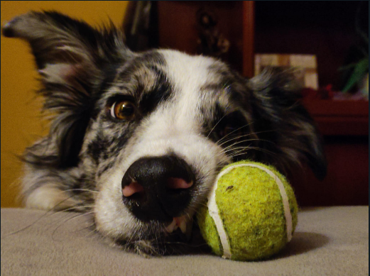
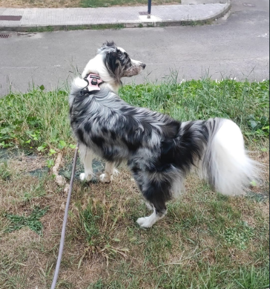

Nombre: Ángel - Apellidos: Macías Rodríguez - Fecha de nacimiento: 31/12/2003
Situación laboral: Estudiante - Universidad: Universidad de Oviedo - Usuario de la universidad: UO289362
Correo electrónico: 289362@uniovi.es
Hola soy Ángel y este es mi primer blog. Para empezar me gustaría contaros que soy un joven de 19 años nacido en Gijón, Asturias, aunque por la época mis padres en Ciudad Real, un municipio de Castilla la Mancha, pero me acuerdo de más bien poco ya que con 1 año me instalé en Gijón.
Desde bien pequeño me ha gustado el fútbol, y desde que no sabía ni andar mi madre, muy futbolera, me llevaba al Molinón, el estadio donde juega el equipo de mi ciudad, el Real Sporting de Gijón, lo que hizo que me enamorara del deporte y del equipo, al que apoyo y seguiré animando siempre.
Además del fútbol también me gustan otros deportes como el automovilismo, el motociclismo o el tenis, pero sin duda mi mayor afición es quedar con mis amigos y pasar un buen rato en algún lugar de ocio, como por ejemplo el 'kotton', un bar al que solemos ir usualmente a jugar al billar y tomar un refrigerio. Como aportación interesante he de decir que práctique la equitación durante unos años cuando era pequeño y mis profesores me querían para el equipo de 'horseball', un deporte parecido al baloncesto pero a caballo. Desafortunadamente tuve que dejar de montar, pero quién sabe si podría estar ganándome la vida con ello ahora mismo. Os dejo un vídeo para que veáis de que trata este desconocido deporte:
Una actividad que hago absolutamente a todas horas es la de escuchar música, ya que me ayuda muchísimo tanto para concentrarme y pensar como la relajarme y dejar la mente en blanco, por lo que os voy a poner mi top 5 artistas para que le echéis un vistazo. He de decir antes de nada que mi espectro musical es gigante y escucho todo tipo de estilos, pero estos son los cantantes que más me suelo poner:
Además os voy a poner el enlace al canal de Avicii y C Tangana para que le echeis un ojo a su repertorio. Y para los que sois vagos y no os apetece buscarlo os dejo aquí un audio con una canción de Avicii: The nights.
En conclusión, voy a poner las 5 mayores aficiones que tengo:
Actualmente dedico casi todo mi tiempo a estudiar y trabajar en cosas de clase, ya que son muchas las tareas por hacer en este curso, tercero, que es el más dificil de la carrera, pero que si consigo superarlo, me asegurará tener un buen futuro con trabajo y dinero, por lo que estoy con muchas ganas de terminar ya. Por si os interesa, os dejo las asignaturas que más me han gustado de lo que llevo de carrera y por qué:
No quería despedirme sin contar que me gustan mucho los animales, especialmente los perros y los caballos. De los primeros siempre he querido tener uno pero nunca me han dejado mis padres, y los segundos me empezaron a gustar de pequeño, y el hecho de que hice equitación durante unos años hizo que me gustaran aún más. Ahora mismo sigo sin animales, pero mi hermana tiene una perrita muy guapa. Es un border collie blu merle, un perro pastor de origen de reino unido que se suele utilizar para pastorear el ganado. A continuación os dejo unas fotos de 'Meatball'.  
| años/temperatura | Temperatura (ºC) |
|---|---|
| 2022 | 18 |
| 2021 | 16 |
| 2020 | 16 |
| 2019 | 17 |
| 2018 | 18 |
| 2017 | 20 |
| 2016 | 17 |
| 2015 | 15 |
| 2014 | 15 |
| 2013 | 14 |